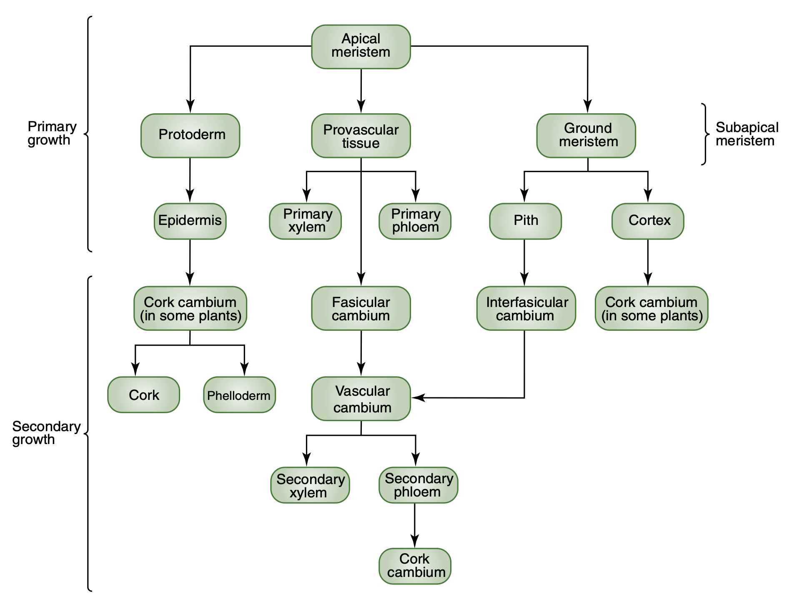
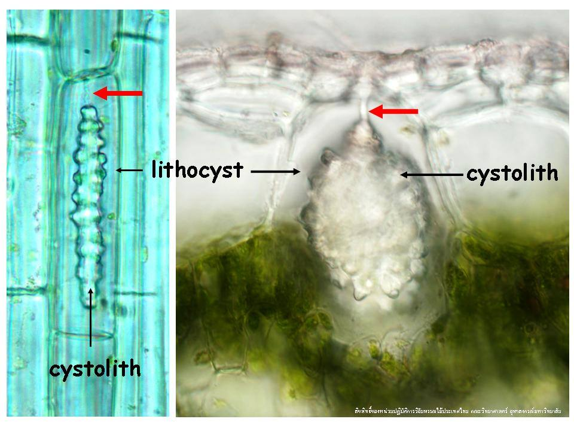
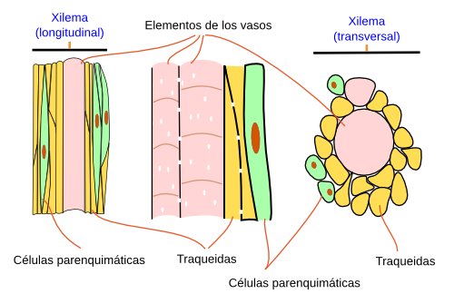
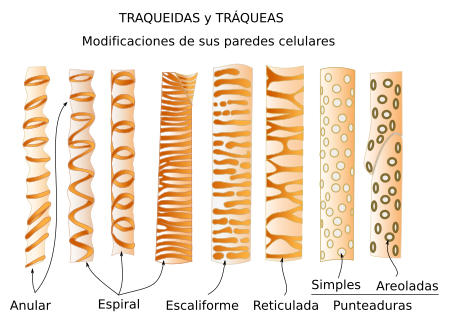

Histología
Tejidos: clasificación

Meristemas: clasificación
Por posición en la planta
- Apicales
- Laterales
- Intercalares
Por naturaleza de las células
- Primarios
- Secundarios


Epidermis
Capa de células que separa el medio interno de las plantas del externo en aquellos órganos que no presentan crecimiento secundario. Megías-Pacheco et al. (2017).
- Tejido complejo
- Formado por varios tipos de células
- Epidérmicas
- Estomáticas
- Idioblastos
- Tricomas
- Las principales funciones son:
- Protección mecánica de tejidos subyacentes
- Restricción de la transpiración
- Regulación del intercambio gaseoso
- Contribuye a dar sostén a la planta

Células epidérmicas
Características
- Células vivas
- Más abundantes y menos especializadas
- Unidas muy estrechamente, sin espacios intercelulares
- Pared celular primaria
- Forma y tamaño muy variados, adaptándose a la estructura que recubren
- Normalmente no tienen cloroplastos, sino proplastos o leucoplastos
- Una gran vacuola
- tienen desarrollado el RE y AG
- Generalmente es una sola fila de células
- En las partes áreas de la planta forman la cutícula (cutina)

Estomas
Abertura en la epidermis de hojas y tallos, bordeada por dos células oclusivas, que facilita el intercambio de gases. También se utiliza para referirse al aparato estomático completo, que incluye las células oclusivas y el poro que forman. Evert (2006).
Características
- Formados por dos células oclusivas o de guarda y un orificio denominado (ostiolo)
- Bajo las células oclusivas se encuentra la cámara subestomática
- Generalmente rodeados por células acompañantes, subsidiarias, o anexas
- El número de estomas es variable
- En hojas normalmente están en el envés
- Controlan el intercambio de gases


Estomas: clasificación
Clasificados en función de la organización de las células oclusivas y las células acompañantes
- Actinocítico: células anexas de manera radial
- Anomocítico: sin células anexas
- Anisocítico: tres células anexas de tamaño desigual
- Ciclocítico: anillos concéntricos de células anexas
- Diacítico: dos células anexas perpendiculares a las oclusivas
- Paracítico: dos células anexas paralelamente a las oclusivas
- Tetracítico: cuatro células anexas
- Poaceae: células oclusivas en forma de mancuerna, dos células anexas pequeñas paralelamente a las oclusivas

Tricomas: clasificación

Idioblastos
Célula de un tejido que difiere notablemente en forma, tamaño o contenido de otras células del mismo tejido. Evert (2006).
- Técnicamente las células oclusivas y los tricomas son idioblastos, sin embargo se suelen tratar como células separadas y distintas
- Células buliformes
- Especializada en almacenar agua en Poaceae
- Células silícicas y suberosas
- Típicas de la epidermis de Poaceae
- Litocitos
- Contienen cistolitos de carbonato de calcio


Esclerénquima
Características
- Tejido compuesto
- Formado por células muertas al madurar
- Pared celular secundaria, engrosada y lignificada
- Variebles en forma, estructura, origen y desarrollo
- Soporte de las estructuras que han dejado de alargarse
- Más abundante en tallos y hojas que en raíces
- Conformado por fibras y esclereidas
- fibroesclereida cuando es difícil de clasificar

Xilema
Características
- Tejido complejo
- Transporta la savia bruta (agua y minerales) desde la raíz al resto de la planta
- Principal elemento de soporte mecánico de las plantas
- Cuatro tipos celulares principales
- Elementos conductores o traqueales
- Elementos de los vasos o tráqueas
- Traqueidas
- Células parenquimáticas
- Fibras esclerenquimáticas
- Elementos conductores o traqueales
- Durante el crecimiento primario se originan el xilema y el floema primarios
- Si hay crecimiento secundario se forman el xilema (leño) y floema secundarios


Elementos conductores o traqueales = tráqueas + traqueidas
Características
- Células con pared celular secundaria gruesa, dura y lignificada
- Sin contenido citoplasmático después de diferenciación
- Se distinguen por el engrosamiento de su parede secundaria
- Anulares, helicoidales, reticulados y punteados.
- Depende del estado de desarrollo


| Traqueas | Traqueidas |
|---|---|
| Principal elemento conductor de las angiospermas | Principal elemento conductor de helechos y gimnospermas |
| Células cortas que forman filas que crean largos tubos | Son células alargadas con los extremos solapados |
| Diámetro interno grande y paredes más finas | Diámetro interno pequeño y paredes más gruesas |
| Poros pequeños y más numerosos | Poros grandes y menos numerosos |
| Tienen placas perforadas | No tienen placas perforadas |
| Mayor eficiencia en la conducción de agua | Menos eficiencia en la conducción de agua |
| Forman tubos | No forman tubos |
Tráqueas y traqueidas

Fig 58: Traqueas y traqueidas. Nabors (2006).
Floema
Características
- Tejido complejo, también llamado líber o tejido criboso
- Transportar y repartir moléculas orgánicas solubles, péptidos, hormonas, proteínas y ARNm
- Origen primario y secundario
- Conformado por varios tipos celulares
- Elementos cribosos
- Miembros del tubo criboso
- Células cribosas
- Células parenquimáticas
- Fibras de esclerénquima y esclereidas
- Elementos cribosos


{kind=link}
{kind=link}
{kind=link}
{kind=link}
.jpg){kind=link}
{kind=link}
{kind=link}